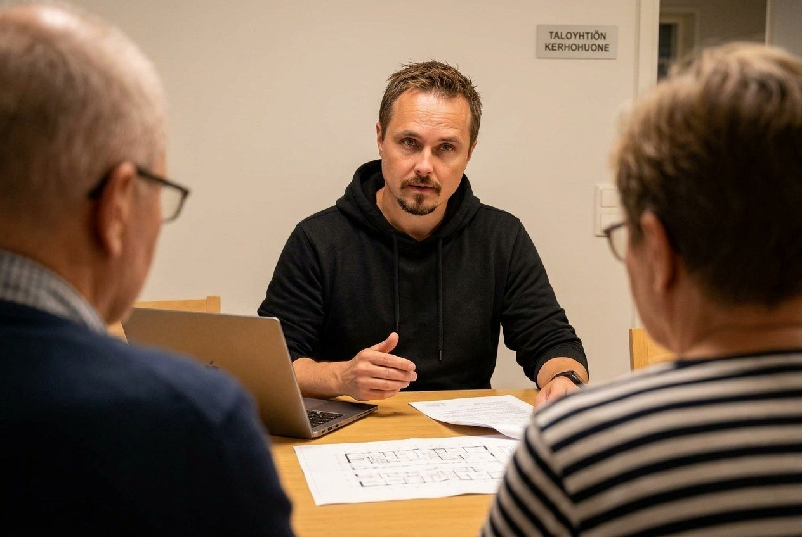

Korjaukset ajallaan, ei hätäkorjauksina
Kuntoarvio ja pitkän tähtäimen suunnitelma (PTS) pidetään ajan tasalla ja korjausten järjestys perustellaan. Ajoissa suunniteltu korjaus on lähes aina halvempi kuin vahinkoon reagointi.
Huolehdin, että korjaukset tehdään ajallaan, talous pysyy suunnitelmallisena ja jokainen päätös perustellaan. Aina taloyhtiön kokonaisedun mukaan.
Vapaaehtoinen hallitus jaksaa usein hoitaa välttämättömän. Ammattilainen hoitaa myös sen, mikä ratkaisee taloyhtiön arvon kymmenen vuoden päästä.
Kuntoarvio ja pitkän tähtäimen suunnitelma (PTS) pidetään ajan tasalla ja korjausten järjestys perustellaan. Ajoissa suunniteltu korjaus on lähes aina halvempi kuin vahinkoon reagointi.
Hankesuunnittelu, kilpailutus, urakkasopimukset ja valvonta. Varmistan, että tarjoukset ovat vertailukelpoisia, sopimukset suojaavat taloyhtiötä ja lisätyöt hyväksytään ennen kuin ne tehdään.
Talousarvio, rahoitus ja vastikkeet suunnitellaan PTS:n mukaan, jotta isot korjaukset eivät yllätä osakkaita. Kulut käydään läpi ja sopimukset kilpailutetaan säännöllisesti.
Selkeät tiedotteet, kysely ennen isoja päätöksiä ja yhtiökokousesitykset, joissa vaihtoehdot ja kustannukset ovat näkyvissä. Luottamus syntyy avoimuudesta.
Huonosti valmisteltu remontti, puutteellinen urakkasopimus tai myöhästynyt korjaus voi maksaa osakkaille kymmeniä tuhansia euroja. Ammattilaisen tehtävä on estää ne ennalta.
Ulkopuolisella ei ole omaa asuntoa, naapurisuhteita eikä omaa etua ajettavana. Erimielisyydet ratkaistaan faktoilla ja koko yhtiön edun mukaan.
Asiat eivät jää odottamaan seuraavaa kokousta tai sitä, että joku ehtii. Hallitustyö on minulle työtä, ei harrastus iltaisin.
Muiden hallituksen jäsenten ei tarvitse kantaa yksin vastuuta asioista, joihin heillä ei ole aikaa tai osaamista.
Kun hallitus tarvitsee vetäjän, joka pitää kokonaisuuden käsissä.
Kun hallitus toimii, mutta siltä puuttuu osaamista tai riippumaton ääni.
Kun edessä on iso päätös, mutta hallituspaikkaa ei tarvita.
Hinta sovitaan taloyhtiön koon, kokousmäärän ja tulevien hankkeiden mukaan. Tarjous on maksuton, ja sen voi liittää sellaisenaan yhtiökokouksen kokouskutsuun.
Hyvä hallinto ei vaadi paperipinoja eikä pitkiä iltoja kerhohuoneessa. Otan taloyhtiössä käyttöön tavat, jotka säästävät kaikkien aikaa.

Valinta tehdään samalla tavalla kuin kenen tahansa hallituksen jäsenen. Autan jokaisessa vaiheessa.
Keskustelkaa asiasta hallituksessa tai osakkaiden kesken. Kerron mielelläni, mitä hyötyä ulkopuolisesta on juuri teille.
Saatte tarjouksen ja lyhyen esittelyn, jotka hallitus liittää perusteluineen kokouskutsuun.
Hallituksen valinta ja palkkiot päätetään yhtiökokouksessa. Ylimääräinenkin kokous käy.
Tulen kokoukseen kertomaan itsestäni ja vastaamaan osakkaiden kysymyksiin.
Sovimme roolin ja vastuut. Perehdyn yhtiön asiakirjoihin ennen ensimmäistä kokousta.
Hallituksen jäsenet valitsee yhtiökokous (asunto-osakeyhtiölaki, 7 luku). Hallituksen jäsenen ei tarvitse olla osakas, ellei yhtiöjärjestyksessä toisin määrätä. Ulkopuolisella jäsenellä on samat oikeudet ja vastuut kuin muillakin.
Olen tradenomi ja toiminut taloyhtiöiden hallituksissa yli kymmenen vuotta, myös puheenjohtajana. Olen valmistellut kokouksia, talousarvioita ja korjauksia, ja tiedän, missä kohdissa taloyhtiöt tyypillisesti menettävät rahaa.
Opiskelen parhaillaan rakennusmestariksi (AMK) Metropolia Ammattikorkeakoulussa. Talotekniikan, rakennusfysiikan ja korjausrakentamisen osaaminen kasvaa koko ajan, ja se näkyy suoraan siinä, miten arvioin kuntoarvioita, urakkatarjouksia ja korjausten järjestystä.
Teen hallitustyötä ilman pönötystä: puhun selkokieltä ja olen helppo tavoittaa. Asiat hoidetaan huolellisesti, mutta osakkaiden ei tarvitse tulkita lakitekstiä ymmärtääkseen, mitä on päätetty.
Toimin riippumattomasti. Minulla ei ole sidoksia rakennusliikkeisiin, isännöintiyrityksiin tai tavarantoimittajiin, joten ainoa etu, jota ajan, on taloyhtiönne.
Voi. Asunto-osakeyhtiölaki ei edellytä, että hallituksen jäsen on osakas tai asukas. Tarkistakaa kuitenkin yhtiöjärjestyksestä, onko siinä omia rajoituksia.
En ota palkkioita urakoitsijoilta tai muilta toimittajilta, enkä ole sidoksissa isännöinti- tai rakennusyrityksiin. Tarjousvertailut ja perustelut ovat koko hallituksen nähtävillä, ja ilmoitan esteellisyydestä heti.
Ei. Isännöitsijä hoitaa juoksevan hallinnon, ja hallitus päättää ja valvoo. Teen tiivistä yhteistyötä isännöitsijänne kanssa ja varmistan, että sovitut asiat etenevät.
Hinta riippuu taloyhtiön koosta, kokousten määrästä ja tulevista hankkeista. Tarjous on maksuton, ja hallituksen palkkioista päättää lopulta yhtiökokous.
Hallituksen toimikausi määräytyy yhtiöjärjestyksen mukaan, yleensä yhtiökokouksesta seuraavaan. Yhtiökokous voi myös vaihtaa hallituksen jäsenen kesken toimikauden.
Taloyhtiön nimen, asuntojen määrän, toivotun roolin ja lyhyen kuvauksen tilanteesta, esimerkiksi tulevista korjauksista.
Ensimmäinen keskustelu ja tarjous ovat maksuttomia eivätkä sido mihinkään.